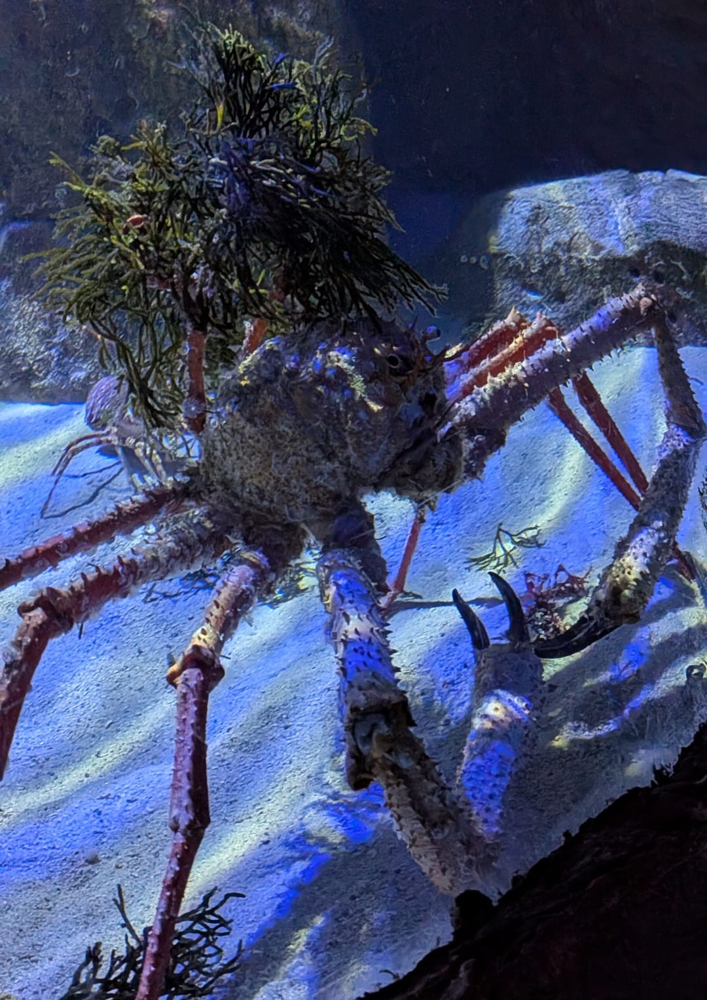

Paramole de Cuvier
Paromola cuvieri
La Paramole de Cuvier est un grand crabe des profondeurs appartenant à la famille des Homolidae. Très discrète, elle est rarement observée car elle vit à plusieurs centaines de mètres de profondeur où la lumière est presque absente.
Informations scientifiques
| Nom scientifique | Paromola cuvieri |
|---|---|
| Nom commun | Paramole de Cuvier |
| Famille | Homolidae |
| Ordre | Decapoda |
| Classe | Malacostraca |
| Habitat | Fonds rocheux et vaseux profonds. |
| Répartition | Atlantique Est et Méditerranée. |
| Profondeur | 150 à 1200 mètres. |
| Taille | Jusqu'à 21,5 cm de carapace. |
| Alimentation | Charognard et prédateur opportuniste. |
Description
Reconnaissable à ses longues pattes et à sa silhouette élancée, la Paramole de Cuvier possède une particularité étonnante : elle transporte fréquemment des éponges, des ascidies ou d'autres organismes sur son dos grâce à ses deux dernières paires de pattes modifiées.
Ce camouflage naturel lui permet de se protéger des prédateurs dans les grands fonds marins.
Espèce principalement nocturne, elle se nourrit de petits invertébrés, de poissons morts et de divers débris organiques présents sur le fond.